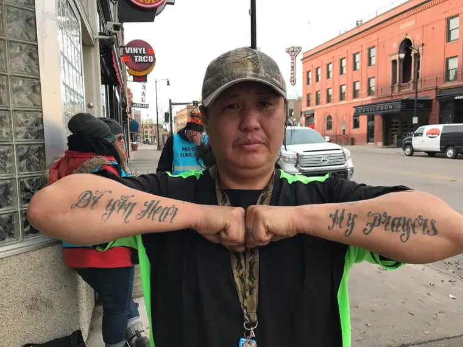

I can think of no better piece to share than this one today, as our four buses from Shanley High School get ready to depart for Washington, D.C., to take part in the 2018 March for Life to end abortion, and bring awareness to the pro-life cause. Please keep us in your prayers. Thank you!
Anyone who frequents the sidewalk of our state’s only abortion facility to pray eventually comes to understand there’s more there than meets the eye.
It’s not just about the people who enter the facility, and what we can do through our prayers and messages of hope. It’s also about what we can bring those who pass by that desolate pathway – or perhaps more importantly, as I recently discovered – what they can bring us.
I’m talking about the homeless, often intoxicated individuals who drift by each week. They’ve become part of the reason I, and others, feel so committed to keep showing up.
Of course, one must be discerning. Downtown isn’t a place for the naive. But by paying attention, I’ve also seen God show up in disguise.
Many of these drifters – the great majority I’ve witnessed or met – are pro-life, and, perhaps because their inhibitions are lowered, they’re not afraid to make it known. Sometimes, they’re almost too vocal, and we find it necessary to encourage them toward a more charitable stance.
Recently, though, one came wandering by and, in stopping to chat, changed the whole tenor of the sidewalk, and left me practically skipping away with joy in my heart.
It might sound crazy, but it was as if – through someone with breath heavy with the stench of hard liquor – God himself spoke to me.
He first paused near the escorts, who turned away from him. He then pivoted from them toward me, giving me a questioning look, like, “What?” And I looked back and shrugged, as if saying, “I don’t get it, either.”
He then approached my friend and I who’d been praying, making his intentions clear. “I’m pro-life,” he said. “I’ll come stand with you.” And he did.
Repeating over and over his regard for life, he shared why he feels so strongly about it. What struck me was his passion, and clarity, through slurred words.
With zeal, he declared, “Every day, children are born into the world. Every day, some of our elders leave. Those babies are a sign that God hasn’t given up on us yet.”
I gulped. It was a profound insight that had never, not in quite that way, occurred to me before.
He persisted, saying that if God hasn’t given up on us yet, why would we? It’s plain wrong, he said, to diminish the hope that God wants to bring us.
After telling me his name, he shared some of his story. “I’m from Arizona,” he said. “I’m Navajo.”
“Why are you here in the cold country?” I asked.
“I’m here to cool off. It can get 115 degrees there.”
We laughed at him needing to escape to North Dakota for relief.
He was abandoned by his parents as a baby, he continued, and raised by his grandparents, who taught him, firstly, to speak in his Native tongue.
Then he returned to talking about his life convictions, how each child born is a miracle, and that we should never take away what the Creator gives us. It’s not our right to do so.
“Yes,” I said. “You are so right!”
He told me about his job, apartment, and vehicle, which he said he won’t drive when he’s been drinking, because he can’t bear the thought of hurting another human life.
Then he showed me his tattoo, which, written into the insides of his arms, stretched from one end of his hand to the other. The first word, in Navajo, meant “Creator,” he explained. The rest: “Hear my prayers.”

“I don’t have anyone,” he said, “no wife, no kids.” And yet he told me how he prays four times a day in gratitude to God.
I believed him, and I assured him God loves him, and affirmed how spot on his ideas were. We had a great conversation, and I promised I would pray for him – and I’ve kept that promise.
I am thankful for the chance to converse with this lonely man who simply wanted to let the world know, “Life is hard, but it is good, because it came from a God who loves us.”
If only we could all be so wise.
Just a short time before he arrived, another prayer advocate had said, pointing to other drifters on the sidewalk, “You see them over there? They are the ones who will be first to enter the Kingdom of God. Just you wait.”
I have a hunch she’s right.
[Note: I’ve been writing about my experiences on the sidewalk Downtown Fargo on Wednesday, the day abortions happen at our state’s only abortion facility, for a year now for New Earth magazine — the official news publication of the Fargo Diocese. I think these stories are worth repeating, so I’ll begin doing so here after original publication, including playing catch-up with the 11 I wrote in 2017. I hope you find “Sidewalk Stories” helpful in better understanding the truth about abortion and the scene as it plays out tragically each week here in Fargo, N.D. The preceding ran in New Earth on Jan. 4, 2018.]